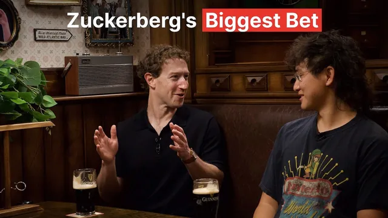

모델도 안 보고 1,000억 달러를 걸었다 — 저커버그·알렉산더 왕의 Muse Wonder

원본 영상 보기 →
- 모델이 곧 제품인 시대엔 '행동 명세'가 기획서예요
- 남이 만든 점수판 대신 내 고객 기준의 평가표를 만드세요
- 에이전트가 손님이 되는 시장이 열리고 있어요
한 줄 요약
마크 저커버그와 알렉산더 왕(Alexandr Wang)이 Stripe 공동창업자 John Collison의 팟캐스트 Cheeky Pint에 나와 메타의 새 프런티어 모델 Muse Wonder를 소개해요. 모델을 보기도 전에 1천억~2천억 달러 규모의 투자를 결정한 과정, "모델이 곧 제품"이라는 관점, 에이전트가 장을 보는 시대의 커머스, 그리고 1년 만에 연구소를 새로 세운 방식까지 한 번에 들을 수 있어요.
전체 내용 정리
쉬는 1분 사이에 MMA 코칭을 해 주는 에이전트
대화는 각자 가장 좋아하는 Muse 사용법으로 시작해요. Alexandr는 'Oiler'라는 이름의 Muse가 매주 대만이나 일본의 이름 모를 농장에서 점점 더 희귀한 차를 찾아 사 온다고 해요. 저커버그의 답은 종합격투기(MMA) 코칭이에요. 체육관에 카메라를 달아 두면 Muse가 영상을 보고 라운드 사이 쉬는 시간에 피드백을 준대요.
이게 생각보다 어려운 문제라고 해요. 쉬는 시간이 1분뿐이라 그 안에 영상을 다 처리해야 하거든요. Muse는 영상에서 정지 화면을 뽑아 "뒷다리에 체중이 너무 실렸다", "이 위치에서 언더훅을 못 잡아서 뒤집힐 수 있다" 같은 말을 해 줘요. 저커버그는 피드백에 30초가 걸리면 "쉬는 시간이 60초뿐이니 더 빨리, 스스로 최적화해"라고 계속 주문한다고 해요.
저커버그는 이 사례에서 미래의 모습을 봐요. Muse는 화면에 코드 한 줄 보여 주지 않지만 속으로는 영상·이미지 처리 파이프라인을 통째로 짜고 있거든요. "앞으로는 모두가 엄청난 양의 코드를 쓰게 될 거예요. 다만 자기가 코드를 쓰고 있다는 걸 모를 뿐이죠." 이 MMA 코칭은 첫 프로토타입 때부터 써 온 사용법이라 지금은 사실상 제품의 평가 기준(eval)이 됐다고 해요.
업계가 코딩에 몰릴 때 메타는 멀티모달에 힘을 줬어요
MMA 자세를 알아보는 건 시각 인식 데이터를 대량으로 넣어 훈련한 덕분이에요. Alexandr는 대부분의 사람이 세상을 말하고 듣고 영상을 보고 직접 찍는 멀티모달 방식으로 경험한다고 말해요. 올해 초 업계엔 "결국 코딩이 전부"라는 통념이 강했는데, Muse 같은 소비자 제품이 성공하려면 멀티모달이 강해야 한다고 봤대요.
저커버그는 한발 더 나가요. "대부분의 사람은 사실 글 읽는 걸 그렇게 좋아하지 않아요." 그가 개발 중인 안경도 언젠가는 순수한 멀티모달 제품이 될 거라고 봐요. 내가 듣는 걸 같이 듣고 내가 보는 걸 같이 보고 말로 대화하죠. 나중엔 안경에 앱스토어가 있을지조차 모르겠다고 해요. 필요한 걸 그 자리에서 시야에 바로 만들어 주는 방식이 될 수 있다는 거예요.
"모델이 곧 제품"이에요
진행자는 AI 제품이 비슷한 모양으로 수렴한다고 주장해요. 엽서 한 장에 설명할 만큼 단순하고 이제 모든 AI 에이전트가 Muse처럼 생기게 될 거라고요. 저커버그는 "동의 못 해요"라고 바로 받아쳐요. 기존 텍스트 비서(메타로 치면 Meta AI)는 정보를 찾아 주는 도구였을 뿐 일을 맡기는 대상이 아니었다는 거예요. 에이전트에게 전용 가상 머신(VM)을 따로 주는 것도 개인정보와 보안 면에서 아주 중요한 결정이었다고 해요.
Alexandr는 모바일 초창기에 "그냥 앱"이라고 뭉뚱그렸던 것과 비슷하다고 말해요. 지금은 "그냥 AI", "그냥 에이전트"라고 부르지만 그 안의 차이는 기존 제품 기획서 방식으로는 잘 안 보인대요. 모델이 상황마다 어떻게 행동할지, 어떤 성격일지, 도구를 어떻게 쓸지가 다 의도된 설계였고 그걸 다 적으면 아주 긴 문서가 될 거라고요.
저커버그는 메타 내부에서 하는 말을 소개해요. "모델이 곧 제품이다(the model is the product)." 제품 화면은 점점 얇아지고 모델이 제품의 더 큰 부분을 차지한대요. 제품을 맡은 냇 프리드먼(Nat Friedman)도 제품을 좋게 만들 핵심을 이야기할 때 화면이 아니라 모델의 사후 훈련(post-training)을 이야기한다고 해요.
Muse에 모델 선택 버튼이나 추론 강도 선택 버튼이 없는 것도 같은 맥락이에요. 저커버그는 "그냥 단순하게 하고 싶었다"고 말해요. Alexandr는 그동안 AI 제품들이 기술자 집단의 눈높이로 만들어져서, 모델 이름에 붙은 숫자가 거꾸로 가기도 할 만큼 헷갈렸다고 꼬집어요. API 문서를 꼼꼼히 읽지 않는 일반 사용자가 뭘 골라야 할지 알 수 없다는 거죠.
새 모델 Muse Wonder는 뭐가 달라졌을까요
Muse Wonder는 메타가 처음부터 준비해 온 새로운 등급의 프런티어 모델이에요. 지금까지의 Muse Spark는 작년 말(12월)에 한 사전 훈련(pre-training)을 기반으로 했고 Wonder는 그다음 사전 훈련으로 만든 훨씬 큰 모델이에요. 내부 코드명은 Spark 계열이 'Avocado', Wonder가 'Watermelon'이었어요. 이제 더 큰 과일이 없어서 이름 규칙을 바꿔야 한다는 농담도 나와요(두리안이 더 무겁긴 하지만 그쪽으로는 가고 싶지 않다고요).
모델은 Muse Wonder와 더 상위 버전인 Muse Wonder Full 두 가지예요. Alexandr가 꼽은 강점은 네 가지예요.
- 액티브 메모리(Active Memory): 며칠, 몇 주, 몇 달 전에 말한 내용을 기억했다가 다음 작업에 써먹는 능력이에요. OpenClaw를 오래 쓰면 기억이 꽤 불안정하다고 느끼게 되는데, 메타는 모델과 기억 시스템을 함께 설계했대요. 기억을 압축(compaction)하는 일도 바깥 장치(harness)가 아니라 모델이 직접 해요. 내부 평가인 Memory Bench로 측정하고 있대요.
- 액티브 포커스(Active Focus): 아주 긴 작업을 끝까지 밀고 가고 중간에 막히면 다른 해결책을 찾는 끈기예요. 내부 테스트에서 다른 모델과 비교해 눈에 띈다는 반응이 많았던 부분이래요.
- 분야별 전문성: 쇼핑, 개인 법률·건강·세금 질문처럼 사람들이 실제로 신경 쓰는 영역이에요. 재무·법률 평가 여러 개에서 최고 수준이라고 해요. Alexandr는 "최고의 개인 에이전트는 내 편에 선 전문가 팀처럼 느껴져야 한다"고 말해요.
- 코딩: DeepSWE와 SWE-Marathon에서 최고 점수를 냈고 Terminal-Bench 4 같은 다른 벤치마크에서도 성적이 좋대요.
Muse에서는 우선 유료 구독자 중심으로 쓸 수 있어요. 모델이 커서 운영 비용이 많이 들기 때문이에요. 무료 사용자는 계속 Muse Spark를 넉넉하게 쓸 수 있고 메타는 머지않아 Wonder 수준을 Spark 크기에 담아 수억 명에게 제공하는 게 목표래요. 개발자는 Meta Model API와 OpenRouter에서 쓸 수 있고 Muse Code에도 들어가요. Wonder Full은 Muse Code 구독자에게 열린대요.
남이 만든 벤치마크에 제품 기획을 맡기지 마세요
진행자는 "지표가 목표가 되면 더는 좋은 지표가 아니다"라는 굿하트의 법칙(Goodhart's Law)을 꺼내요. 모델이 벤치마크 점수만 쫓다가 오히려 나빠지지 않느냐는 거죠. 저커버그는 벤치마크가 너무 빨리 포화되니 계속 바뀌어야 한다고 답해요. 초기엔 제대로 가고 있는지 확인하려고 외부 벤치마크를 봤지만 출시가 거듭될수록 내부 벤치마크 비중이 커지고 있다고 해요.
Alexandr는 재미있는 지표를 소개해요. 큰 모델을 써 보면 "뭔가 다르다"고 느끼는 감각, 이른바 '빅 모델 스멜(big model smell)'을 수치로 만든 거예요. 훈련에서 다룬 유형의 작업과 처음 보는 유형의 작업에서 성능 차이가 얼마나 나는지를 재요. 이 격차가 작을수록 진짜 실력이고 클수록 벤치마크에 맞춰진 거죠. Spark에서 Wonder로 넘어오면서 이 부분이 크게 좋아졌대요.
저커버그는 개인 에이전트에서 특히 중요한 능력으로 분별력(discretion)을 들어요. 알레르기가 있거나 임신 중인 사람이 식당을 예약할 때, 에이전트는 내 사정을 다 알면서도 식당에는 최소한만 알려야 하잖아요. 모두가 같은 정보를 공유하는 코딩 환경에서는 별로 중요하지 않은 능력이에요.
외부 벤치마크에 대한 지적도 날카로워요. 그 출처를 따라가 보면 어느 박사과정 학생이 학위 과정 중에 만든 것인 경우가 많대요. 그 벤치마크만 쫓는 건 우연히 유명해진 벤치마크를 만든 학생에게 제품 기획을 통째로 맡기는 셈이라고요. 그래서 메타는 사용자에게 중요한 작은 능력과 뉘앙스를 스프레드시트에 꼼꼼히 적어 두고 하나씩 다듬는대요. 하나하나는 사용자에게 2% 정도의 차이일지 몰라도 그게 쌓이면 마법처럼 느껴지는 모델이 된다는 거예요.
모델은 이렇게 만들어져요 — 사전 훈련과 사후 훈련
사전 훈련은 공개 인터넷, 구할 수 있는 모든 책 같은 데이터를 최대한 많이 넣는 단계예요. 시각 인식을 잘하게 하려면 이미지·오디오·영상을, 특정 분야를 잘하게 하려면 그 분야 데이터를 처음부터 넣어야 해요. 마지막에 강화학습으로 덧붙이는 걸로는 부족하대요. 모델을 키우려면 데이터도 같이 늘려야 하는데 인터넷은 그만큼 빨리 늘지 않아요. "데이터를 어디서 구하느냐"가 큰 과제라고 저커버그는 말해요.
사전 훈련은 Alexandr 표현으로 가장 위험 부담이 큰 연구 영역이에요. 전체 컴퓨팅 자원의 큰 몫을 Wonder 사전 훈련에 쏟았는데, 시도할 수 있는 횟수가 적어서 결과를 추론으로 예측해야 하거든요. 그 과정에서 "슬픔의 7단계를 다 겪었다"고 해요.
사후 훈련은 두 단계예요. 먼저 지도 미세조정(SFT, Supervised Fine-Tuning)으로 질문과 원하는 답을 함께 보여 주며 성격 같은 행동을 심어요. Alexandr 설명에 따르면 이 단계가 끝나도 원하는 행동은 10% 정도만 나와요. 그다음 강화학습(RL)으로 그 행동이 훨씬 자주 나오게 끌어올리는 거죠.
흥미로운 사실이 하나 있어요. Muse Spark 1에서 1.1, 1.2, 1.3으로 올라가는 동안 사전 훈련은 하나도 바꾸지 않았대요. 강화학습만 더 했는데도 Alexandr는 1과 1.3이 "밤과 낮"처럼 달라서 사람들에게 물으면 서로 다른 사전 훈련으로 만든 모델이라고 답할 거래요. 강화학습에서는 오히려 데이터가 적을수록 나은 경우가 많고 모델이 안전하지 않은 방법으로만 성공할 수 있는 환경은 신중하게 걸러냈다고 해요.
정렬(alignment)에 대한 메타의 관점도 나와요. 저커버그는 정렬을 에이전트가 섬기는 그 사람의 지시와 가치에 맞추는 것으로 본다고 해요. 시킨 일을 확실하게 해야 하고 왜 그런 걸 시키냐는 훈계를 늘어놓아선 안 된대요. 물론 정말 위험한 요청이면 사용자를 화나게 하지 않으면서 부드럽게 거절해야 하고요. 다른 연구소들과는 꽤 다른 사고방식이라고 스스로 말해요.
모델도 안 보고 1천억 달러를 걸어야 했어요
Wonder는 작년 8월부터 계획한 모델이에요. Spark를 끝내고 Wonder를 시작한 게 아니라, Spark를 처음부터 Wonder로 가는 디딤돌로 봤대요. 컴퓨팅 쪽은 더 길어요. 오하이오의 Prometheus 클러스터는 1기가와트 이상으로 커지고 있고 루이지애나에는 5기가와트 규모의 Hyperion 클러스터를 짓고 있어요. 계획은 Llama 시절인 2023~2024년에 시작했는데 이제야 가동되는 중이에요.
비용 이야기도 꽤 구체적이에요. 저커버그 말로는 1기가와트 클러스터를 1년 운영하는 데 약 150억 달러, 처음 짓는 데는 500억~600억 달러쯤 든대요. 연구를 위한 작은 규모 실험과 서비스 운영까지 더하면 프런티어 모델 하나에 수백억 달러가 든다는 데 다들 동의해요.
문제는 그 돈을 결과를 보기 전에 써야 한다는 거예요. 작년 말 저커버그는 "1천억, 2천억 달러짜리 수표를 쓰려는데, 알렉스, 정말 될까요?"라고 물었대요. 당시 Alexandr가 보여 줄 수 있는 건 연구 진행 상황에 대한 감과 그래프 몇 장뿐이었어요. 그 무렵 임원진이 하와이에 모였을 때 CFO 수전 리(Susan Li)는 Alexandr를 여러 번 따로 불러 "이게 안 되면 재무적으로 정말 정말 나빠진다"고 신신당부했대요. Alexandr는 이걸 '하드 모드 창업'이라고 불러요. 될지 보고 나서 두 배로 거는 린 스타트업(Lean Startup)과는 정반대라는 말도 나와요. 기다리다 보면 이미 한참 뒤처지거든요.
그런데 저커버그는 생각만큼 위험하진 않았다고 말해요. AI가 잘되면 메타의 컴퓨팅 자원을 원하는 곳이 넘쳐 나니, 이게 실패하려면 메타만이 아니라 AI 산업 전체가 실패해야 하거든요. 그래도 안 되면 다른 데 쓸 곳도 많고요. 출시 후 반응은 예상 이상이었어요. 메타 내부의 기본 예상은 "몇 번 고쳐 가며 맞춰야겠다"였어서 성장 장치를 다 준비하지 못한 채 출시했대요. 준비가 돼 있었으면 더 빨리 키웠을 거라고 해요.
에이전트가 장을 보는 시대, 상거래는 어떻게 바뀔까요
진행자가 묻습니다. 에이전트를 반기지 않는 기업도 있을 텐데 경제는 어떻게 굴러가게 될까요? 저커버그는 먼저 브라우저 조작 능력을 모델에 깊게 훈련시켰다고 말해요. 그래서 아무도 따로 연동하지 않아도 Muse가 웹사이트를 쓸 수 있어요. 그 위에 원하는 파트너와는 API로 직접 연결하고요. 언젠가는 지금 모든 기업이 웹사이트와 이메일을 갖고 있듯 모든 기업이 에이전트를 갖게 될 것이라고 해요. 막으려는 곳보다 깊게 연동하고 싶다고 연락해 오는 기업이 훨씬 많다는 것도 덧붙여요.
Alexandr는 오프라인 매장이 남아 있어도 이커머스 비중이 커졌듯, 에이전트를 통한 구매가 전체 파이에서 차지하는 몫이 커질 것이라고 봐요. Muse는 사람들이 실제로 구매를 에이전트에 완전히 맡기는 첫 제품 중 하나래요. 가치는 세 가지예요. 웹사이트를 돌아다니며 조사하는 수고가 사라지고 "수요일까지 받을 수 있는 것만" 같은 조건이 자동으로 걸리고 가족·친구·동료에 대한 맥락을 다 아니까 개인화가 훨씬 깊어진다는 거예요.
저커버그의 사례가 따뜻해요. 세 살 딸 오렐리아(Aurelia)가 베이킹을 좋아해서 주말마다 같이 굽기 시작했대요. 아직 정식 출시 전인 음성 모드로 딸과 함께 Muse에 이번 주말에 뭘 구울지 이야기하면, Muse가 목소리로 누가 누군지 구분하고 매주 토요일에 맞춰 인스타카트(Instacart)로 재료를 주문해 둔대요. 어느 주엔 주문 금액이 배송 최소 금액에 못 미치자 수박 한 통을 추가하자고 제안했다고 해요. 그 주에 'Watermelon'(Wonder의 코드명)이 출시된다는 것까지 알고 있었던 거죠.
저커버그는 원래 인스타카트를 1년에 두 번쯤 쓰던 사람이에요. Muse에 연결하려고 계정을 새로 만들었고 지금은 일주일에 한두 번 쓴대요. 그래서 그는 이렇게 물어요. "그 인스타카트 계정은 나를 위한 걸까요, Muse를 위한 걸까요?" 사람만이 아니라 에이전트도 계정을 갖게 되면 상거래 시장 자체가 커진다는 거예요. 진행자도 Stripe의 에이전트 커머스 지표가 5월 발표 이후 9월부터 수직으로 치솟기 시작했다고 거들어요.
음성은 왜 이렇게 오래 걸렸을까요
시리(Siri)가 나온 뒤로 "컴퓨터에 말로 시키기"는 오래된 꿈이었는데 왜 아직도 잘 안 될까요? 저커버그는 세 가지를 꼽아요. 말을 알아들어도 실제로 일을 할 수 있어야 하고 사람의 대화는 "말하고 기다리고 대답하는" 식이 아니라 끼어들고 멈칫하는 리듬이 있어요. 그리고 말로 전달하는 건 빠르지만 말로 듣는 건 화면으로 보는 것보다 훨씬 비효율적이래요. 그래서 이상적인 인터페이스는 말로 넣고 눈으로 보는 조합일 거라고 해요.
Alexandr는 이미 음성 입력은 폭발적으로 늘었다고 말해요. 연구자 대부분이 키보드 대신 말로 생각을 쏟아 내며 입력한대요. 요즘 대학생들은 10~15분 동안 의식의 흐름대로 말을 쏟아 낸 뒤 AI에게 정리를 맡긴다고 하고요. 그리고 AI가 실제로 일을 할 수 있게 되면서 대화의 느낌이 사람과 이야기하는 쪽에 훨씬 가까워졌대요.
하드웨어 이야기도 나와요. 화면이 없거나 작아도 카메라와 오디오만으로 안경은 충분히 쓸모 있다는 걸 확인했고 작은 디스플레이가 달린 안경도 출시했대요. 'Muse Gadgets'로 다른 기기 제조사에도 문을 열었는데 여러 휴대폰 제조사가 관심을 보였대요. 동전만 한 USB 기기 'HomeLink'를 꽂으면 Muse가 집 안 기기에 연결되고요. 저커버그는 저녁에 쉴 시간이 되면 집 안 조명을 한꺼번에 어둡게 하도록 시켜 둔다고 해요.
돈은 어디서 버나요
막대한 투자금을 어떻게 회수할지에 대한 저커버그의 답을 Alexandr는 메타의 기본 공식으로 요약해요. 10억 명에게 먼저 퍼뜨리고 그다음에 수익을 키운다는 거죠. 저커버그 설명으로는 Muse를 무료로 쓰게 하는 건 사용자가 많을수록 사람들끼리 에이전트로 연결되는 네트워크 효과가 생기고 파트너도 더 적극적으로 연동하기 때문이에요.
수익원은 여러 갈래예요. 유료 구독, 사용자가 아끼거나 번 돈에서 작은 몫을 가져가는 커머스 수익, 소규모 사업자를 위한 '상자 속 사업(business in a box)', API, 그리고 CJ Desai를 영입해 시작한 Meta Enterprise Platform이 있어요. 여기에 모델로 기존 핵심 사업을 몇 퍼센트만 더 빨리 키워도 투자금 상당 부분을 감당할 수 있대요.
진행자는 회계 관점도 짚어요. 데이터센터는 자본 지출로 잡아 여러 해에 걸쳐 감가상각할 수 있지만 연구자 인건비는 그럴 수 없거든요. 이 대목에서 직접 데이터센터를 짓는 메타가 클라우드를 빌려 쓰는 회사보다 재무적으로 유리하다는 이야기가 이어져요. 컴퓨팅 공급이 계속 부족해서 H100의 가치가 작년보다 오히려 올랐다는 말도 나와요.
왜 AI는 승자독식이 되지 않았을까요
Stripe가 인수하기로 한 OpenRouter에 조언해 달라는 질문에 Alexandr는 모델들이 서로 다른 방향으로 특화되고 있다는 점을 짚어요. 같은 벤치마크로 뭉뚱그리면 그 차이가 사라지니, 와인 소믈리에처럼 모델의 결을 설명해 주는 역할이 필요하다고요. 저커버그도 다양한 모델이 공존하는 생태계를 지지해요. 안전 측면에서도 소수 기업만 좋은 모델을 쥐는 것보다 다양한 모델이 서로 견제하는 구조가 덜 위험하다고 봐요.
2023년엔 한 연구소가 앞서 나가 스스로 개선을 거듭하며 멀리 달아날 거라는 예측이 많았죠. 왜 그렇게 안 됐을까요? Alexandr는 세 가지를 들어요. 어느 연구소든 잘할 때와 못할 때가 번갈아 와서 평균이 맞춰지고 증류(distillation)가 뜻밖에 잘 작동해 오픈소스가 빠르게 따라올 수 있었고 업계 사람들 스스로 한 회사가 다 가져가는 미래를 원하지 않는다는 거예요.
1년 만에 연구소를 새로 세운 방식
메타는 2025년 4월 Llama 4를 출시했는데 기대에 못 미쳤어요. 저커버그는 그달 20~21일쯤부터 여러 사람에게 조언을 구하기 시작했고 Alexandr도 왓츠앱으로 "통화할 시간 있어요?"라는 메시지를 받았대요. 44분쯤 통화한 이틀 뒤 Alexandr가 "내가 당신 입장이라면 이렇게 하겠다"는 긴 글을 보냈는데, 첫 항목이 "사람이 많이 필요하지 않다, 중요한 건 인재 밀도다"였어요.
그래서 MSL은 일부러 작게 꾸렸어요. 연구팀은 200명이 안 되고 실제로는 100명에 가깝대요. 여기에 인프라 인력이 따로 있어요. 다른 연구소라면 단계마다 수백 명이 붙을 일을 수십 명이 맡고 있어요. 저커버그는 컴퓨팅을 여러 경쟁 프로젝트에 땅콩버터 바르듯 얇게 펴 바르지 않고 핵심 인력에게 몰아준다고 말해요.
진행자는 다른 창업자들이라면 하지 않았을 결정 네 가지를 짚어요. 기존 팀의 결과를 사실상 실패로 인정했고 Alexandr를 데려오려고 Scale AI 지분 49%를 포함해 엄청난 돈을 썼고 프런티어 모델을 직접 훈련해 본 적 없는 사람에게 연구소를 맡겼고 두 달 가까이 일정을 비우고 이 일만 했다는 거예요. 저커버그는 모든 연구소의 리더와 연구 책임자를 만나 본 뒤 "Alex가 바로 그 사람"이라고 확신했대요. 분야는 계속 바뀌니까 최신 훈련 기법을 잘 아는 사람보다 명확하게 생각하고 빠르게 생각을 바꾸는 창업가형 인물이 필요하다고 봤어요.
Alexandr는 저커버그가 새 정보를 받아들이면 세계관을 통째로 갱신하고 그에 맞춰 행동을 즉시 바꾼다고 말해요. 진행자는 이걸 "아주 베이지안(Bayesian)"이라고 받죠. 많은 CEO가 "AI가 가장 중요하다"고 말하지만 실제 행동이 그 말과 얼마나 일치하는지가 차이라고요. 회사 전체가 MSL을 지원하는 쪽으로 방향을 틀 수 있었던 것도 창업자 CEO라서 가능했대요. 메타는 MSL에 마감일을 두지 않았는데, 대신 스스로 동기가 강한 사람들을 모았기 때문에 오히려 다들 최대한 빨리 움직였다고 해요.
팀 분위기에 대한 일화도 재밌어요. Alexandr는 팀을 "불안해하는 과잉성취자들"이라고 불러요. 3개월 뒤 어디쯤 가 있을지 물으면 다들 "망했다"고 답한대요. 그래서 그 답을 기록해 뒀다가 3개월 뒤 모델을 출시하면 "3개월 전에 다들 이렇게 말했어요"라고 보여 준대요. Wonder가 좋다는 걸 안 순간도 비슷해요. 사전 훈련을 마친 뒤 강화학습을 얼마나 해야 Spark를 넘을지 두고 사전 훈련 팀은 "오래 걸릴 수 있다"며 기대치를 낮췄는데 곧바로 넘어섰다고 해요.
Alexandr가 합류 초기에 겪은 장면도 하나 나와요. 기존 팀 리더 회의에서 "가장 먼저 좋은 추론(reasoning) 모델을 만들어야 한다"고 했더니, 한 핵심 리더(지금은 메타를 떠났대요)가 "우리 소비자에게 추론 모델이 필요한가요?"라고 되물었대요. Alexandr는 "회사를 잘못 골랐구나" 싶었다고 해요. 그 뒤 저커버그가 AI에 완전히 빠져들고 회사 전체가 그걸 보면서 리더들도 빠르게 바뀌었대요. 인스타그램을 이끄는 애덤 모세리(Adam Mosseri)는 지금 개인용 미니 앱을 직접 코딩해 쓰는 정도라고 해요.
마지막으로 저커버그는 직속 보고자가 200명 가까이 되는 구조의 핵심이 "비기술직 관리자가 없는 것"이라고 정리해요. 기술 일을 하다 관리직으로 가면 생각보다 훨씬 빨리 감을 잃는데, 이렇게 빨리 변하는 분야에선 그게 위험하다는 거예요. 그래서 리더도 직접 에이전트를 쓰고 코드를 써야 한대요. Alexandr의 X(트위터) 밈 활동에 대해선 "대본처럼 다듬는 것보다 진정성 쪽으로 기우는 게 낫다"고 감싸요. 대화는 이 말로 마무리돼요. "기술에서 손 놓지 말고 최전선에 머물러라."
핵심 인사이트
- 모델이 곧 제품인 시대엔 '행동 명세'가 기획서예요: 메타는 모델이 상황마다 어떻게 행동할지를 스프레드시트에 하나하나 적고 다듬었어요. 화면 설계보다 AI가 무엇을 어떻게 하는지가 제품의 질을 정한다는 뜻이에요. 프롬프트나 에이전트로 서비스를 만드는 사람에게 그대로 적용돼요.
- 남이 만든 점수판 대신 내 고객 기준의 평가표를 만드세요: 외부 벤치마크는 처음 방향을 잡는 데만 쓰고 실제 측정은 내 사용자에게 중요한 항목으로 측정해야 한다는 게 두 사람의 공통된 메시지예요. "어느 박사과정 학생에게 제품 기획을 맡기는 셈"이라는 말이 핵심을 찔러요.
- 에이전트가 손님이 되는 시장이 열리고 있어요: 저커버그는 Muse 때문에 인스타카트를 새로 쓰기 시작했어요. 에이전트가 웹사이트를 대신 쓰고 대신 주문하게 되면 "에이전트가 쓰기 쉬운 사업"인지가 새 경쟁력이 돼요. 막는 쪽보다 연동하려는 기업이 훨씬 많다는 점도 눈여겨볼 만해요.
오늘 당장 해볼 것
- 지금 쓰는 AI 비서나 자동화에 "꼭 이렇게 행동해야 한다"는 항목을 10개 정도 표로 적어 보세요. 항목마다 잘됨·안 됨을 표시해 두면, 메타가 스프레드시트로 모델을 다듬은 방식을 작은 규모로 따라 해 볼 수 있어요.
- 내 서비스의 예약·주문·문의 과정을 ChatGPT 에이전트나 Claude 같은 브라우저 조작 에이전트에 처음부터 끝까지 맡겨 보세요. 어디서 막히는지 보면 에이전트가 손님이 될 때 내 사업이 얼마나 준비돼 있는지 감이 와요.
- 생각을 정리할 일이 있으면 스마트폰 음성 메모에 10분 정도 떠오르는 대로 말한 뒤, 받아 적은 글을 AI에게 넘겨 구조를 잡아 달라고 해 보세요. 영상에 나온 대학생들의 사용법인데 타이핑보다 훨씬 빠르게 초안이 나와요.